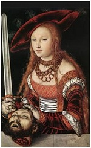

- 1. The Poisoned Chalice
- Rodrigo Borgias uses his considerable wealth to buy the votes of some of his fellow cardinals to secure his place on the papal throne.This is resented by many.
- 2. The Assassin
- Cesare manages to turn a deadly assasin to the cause of the family, using him to dispose of his former employer and enemy ofthe Borgias.
- 3. The Moor
- Visiting nobles start to arrive in Rome to pay homage to the new pope, Rodrigo uses the opportunity to start to look for a suitable husband for his daughter, the headstrong Lucrezia
- 4. Lucrezia's Wedding
- Lucrezia is married off to Giovanni Sforza. It,s a match made in the corridors of power, not a match made for the heart. Lucrezia soon learns her new husband would rather spend his time on the hunt than with his new wife.
- 5. The Borgias in Love
- Lucrezia finds solace in the arms of the young handsome stable boy Paolo. When her husband is laid up after a hunting accident she finds time to slip off to be with her new lover. Dangerous!

- 6. The French King
- King Charles of France, with his powerfull army is being courted by the enemies of the pope as they seek to make alliances with this powerful Man. This could prove to be a big problem for the family.
- 7. Death, on a Pale Horse
- Charles invades to take possesion of Naples, which he has laid claim to. The power of his cannon proves devestating used against the italian infantry.
- 8. The Art of War
- Lucrezia leaves castle Forli to return to Rome. On the way she is caught up by the French army. Charles however proves himself to be a gentleman and treats her with respect. She then manages to save her brother Juan and the papal army from slaughter as they have foolishly rallied to meet the French at the gates of Rome.
- 9. Nessuno (Nobody)
- The French march on rome. In panic most of the college of cardinals flee the city, but the pope remains. Disaster is averted when Lucrezia charms Charles into meeting with the pope, who cedes to his claim over Naples, (He neglects to mention however that the city is in the grip of the plague)